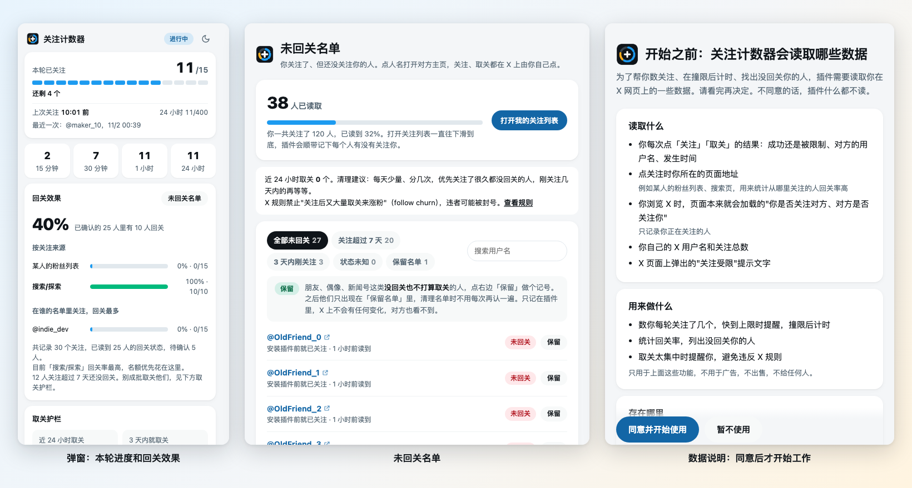

关注计数器 – 防撞限、查回关
给在 X（原 Twitter）上靠关注起号的新手用的 Chrome 插件：数每轮关注了几个，快到上限提醒歇一下，撞限后计时；还能找出没回关你的人。只记录、不替你操作，数据只存在你自己的电脑里。

本项目与 X Corp. 没有关联。
给在 X（原 Twitter）上靠关注起号的新手用的 Chrome 插件：数每轮关注了几个，快到上限提醒歇一下，撞限后计时；还能找出没回关你的人。只记录、不替你操作，数据只存在你自己的电脑里。

本项目与 X Corp. 没有关联。